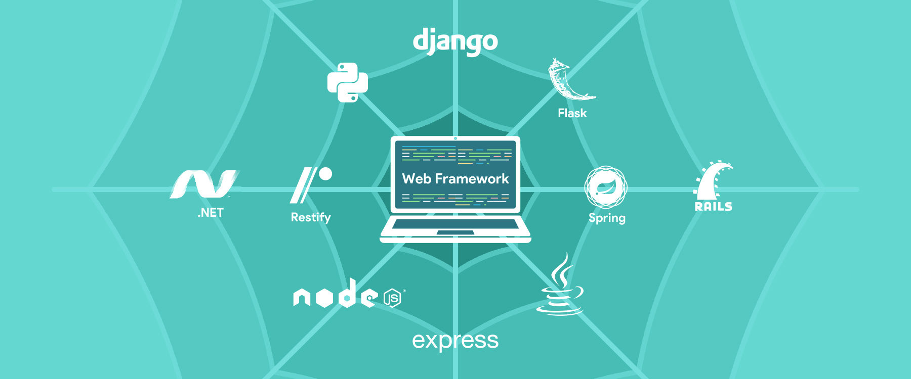
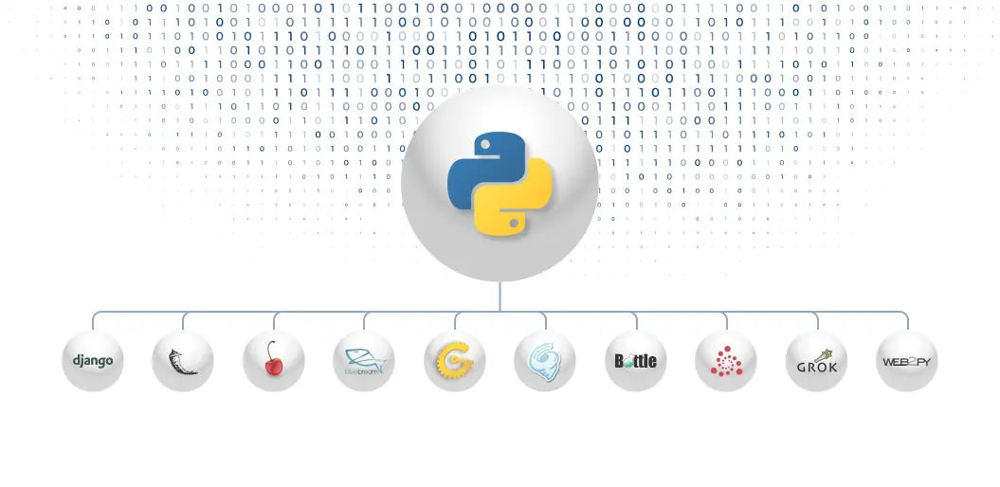
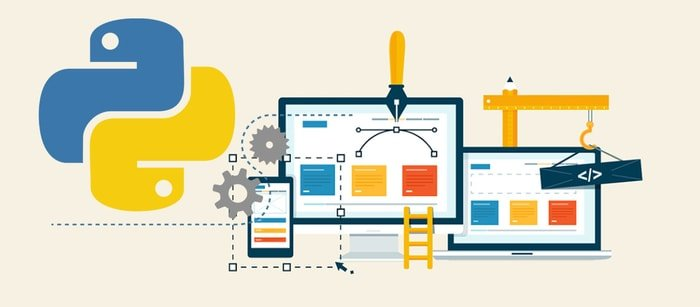

Top 11 Python Frameworks for Web Development In 2021
Python is on an unexpected upward movement. And, the demand is sure to continue with no sign of dampening anytime soon. Python is expected to overtake Java and C# in the coming years, which is a clear indication of a lot more to come. Many of today’s big tech companies such as Google, Netflix, Instagram, are selecting Python frameworks for web development.
According to the Popularity of Programming Language Index, “python grew the most over the last five years by 19.0%. The
TIOBE index puts python web application development at the 3rd place among the most used languages in the world”
Python gives a wide scope of frameworks to developers. There are two types of Python frameworks – Full Stack Framework
and Non-Full Stack Framework. The full-stack Python frameworks give full support to developers including basic
components like form generators, form validation, and template layouts.
Since Python does not accompany the built-in features required to accelerate custom web application development, many
developers choose Python’s robust collection of frameworks to deal with the subtleties of execution.
Rather than writing similar code for every project, Python developers can use ready-made components in the framework.
This not only saves time and money but even reduces time-to-market.
Python is an object-oriented, powerfully composed, interpreted, and interactive programming language. It’s easy-to-learn
and easy-to-read feature effectively lessens the development time.
Ask any Python developer — newcomers or the skilled ones— they’ll agree on its reliability and efficient speed.
Developers can work with and deploy Python frameworks for web development.
Popular Python frameworks 2021
Listed below are the top Python frameworks that a web development company and developers should choose in 2021 for enhancing website performance and time-to-market.
1. Django
Django, a free and open-source Python framework, enables developers to develop complex code and apps quickly. Django
framework assists in developing quality web applications. It is among the best python frameworks and is used for the
quick development of APIs and web applications.
More than 12,000 known projects are developed in the Django framework. Furthermore, it is among the more seasoned web
development Python frameworks.
This high-level framework streamlines web application development by giving different vigorous features. It has a
colossal assortment of libraries and underscores effectiveness, less need for coding, and re-usability of components.
Key Features of Django
• Assists you to define patterns for the URLs in your app.
• Built-in authentication system.
• Simple yet powerful URL system.
• Object-oriented programming language database that offers the best data storage and recovery.
• The automatic admin interface feature enables the functionality of editing, adding, and deleting things with
customization.
• Cache framework accompanies multiple cache mechanisms.
2. CherryPy
CherryPy, almost ten years old now, has proved to be exceptionally quick and stable. It is an open-source Python web
development framework that embeds its own multi-hung server. It can run on any working framework that supports Python.
A moderate web framework empowers you to use any kind of technology for data access, templating, and so on. Yes, it can
do everything that a web framework is capable of, for example, taking care of sessions, file uploads, static, cookies,
etc.
CherryPy enables developers to develop web apps similarly they would develop any other object-oriented Python program.
This results in the development of smaller source code in less time.
Key Features of CherryPy
• A consistent, HTTP/1.1-compliant, WSGI thread-pooled webserver
• Easy to run various HTTP servers (for example on multiple ports) at once
• Runs on Python 2.7+, 3.5+, PyPy, Jython and Android
• Built-in tools for encoding, sessions, caching, authentication, static content, and many more
• A powerful configuration system for developers and deployers alike
• Built-in profiling, coverage, and testing support
3. Pyramid
Pyramid’s popularity is progressively growing. Most of the experienced developers are embracing it. Pyramid frameworks
run on Python 3. This framework is flexible and allows users to develop basic web apps via a minimalistic approach.
Pyramid frameworks are versatile and can be used for both easy and difficult projects. It is the most valued web
framework among experienced Python developers by virtue of its transparency and measured quality. It has been used by
tech giants like Mozilla, Yelp, Dropbox, and SurveyMonkey.
Key Features of Pyramid
• Ability to run well with both small and large apps
• URL mapping based on Routes configuration through URL dispatch and WebHelpers
• HTML structure validation and generation
• All-embracing templating and asset details
• Testing, support, and comprehensive data documentation
• Flexible authentication and approval
4. Grok
Grok framework is a web framework based on the Zope toolkit technology. It gives an agile development experience to
developers by concentrating on two general principles – convention over configuration and DRY (Don’t Repeat Yourself).
It is an open-source framework, developed to speed up the application development process.
Developers can choose from a wide scope of network and independent libraries as indicated by the task needs. Grok’s UI
(user interface) is like other full-stack Python frameworks such as Pylons and TurboGears.
Key Features of Grok
• Offers a strong foundation for developing powerful and extensible web applications
• Enables web developers to take advantage of the power of Zope 3
• A powerful object database for storage
• Integrated security to ensure your application and grant access to specific users
• Grok component architecture helps developers lessen the unpredictability of development
• Offers the building blocks and other essential assets to develop custom web applications for business needs

5. TurboGears
TurboGears is a data-driven full-stack web application Python framework. It is designed to overcome the inadequacies of
various extensively used web and mobile app development frameworks. It empowers software engineers to begin developing
web applications with an insignificant setup.
TurboGears enables web developers to streamline Python website development utilizing diverse JavaScript development
tools. You can develop web applications with the help of elements such as SQLAlchemy, Repoze, WebOb, and Genshi, much
faster than other existing frameworks. It supports different databases and web servers like Pylons.
The framework pursues an MVC (Model-View-Controller) design and incorporates vigorous formats, an incredible Object
Relational Mapper (ORM) and Ajax for the server and program. Organizations using TurboGears incorporate Bisque,
ShowMeDo, and SourceForge.
Key Features of TurboGears
• All features are executed as function decorators.
• Multi-database support.
• Accessible command-line tools.
• MochiKit JavaScript library integration.
• MVC-style architecture and PasteScript templates.
• ToscaWidgets to ease the coordination of frontend design and server deployment.
6. Web2Py
Web2py accompanies a debugger, code editor as well as a deployment tool to enable you to build and debug the code, as
well as test and keep up web applications. It’s a cross-platform framework that underpins Windows, Unix/Linux, Mac,
Google App Engine, and different other platforms.
The framework streamlines Python app development procedure via a web server, SQL database, and an online interface. It
enables clients to build, revise, deploy, and manage web applications via web browsers.
The key component of Web2py is a ticketing framework, which issues a ticket when a mistake occurs. This encourages the
client to follow the mistake and its status. Also, it has in-built components to manage HTTP requests, reactions,
sessions, and cookies.
Key Features of Web2py
• Supports settlement over configuration and facilitates quick web development.
• Supports MVC Architecture to simplify web development.
• Enables developers to work with broadly used relational and NoSQL databases.
• Web-Based IDE to accelerate web development projects like cleaning temp files, editing app files, running tests, and
browsing past tickets.
• It comes with Useful Batteries to build a variety of web apps efficiently without using external tools and services.
• Keeps the web apps secure by addressing top vulnerabilities and security issues.
7. Flask
Flask is a Python framework accessible under the BSD license, which is inspired by the Sinatra Ruby framework. Flask
relies upon the Werkzeug WSGI toolbox and Jinja2 template. The main purpose is to help develop a strong web application
base.
Developers can develop the Python backend framework any way they need, however, it was designed for applications that
are open-ended. Flask has been used by big companies, which include LinkedIn and Pinterest. Compared to Django, Flask is
best suited for small and easy projects. Thus, you can expect a web server development, support for Google App Engine as
well as in-built unit testing.
Key Features of Flask
• Built-in development server and debugger.
• RESTful request dispatching.
• Integrated unit testing support (code with quality).
• Uses Jinja2 templating (tags, filters, macros, and more).
• 100% WSGI 1.0 compliant.
• Multiple extensions provided by the community that eases the integration of new functionalities.

8. Bottle
Bottle is one of the best Python web framework, which falls under the class of small-scale frameworks. Originally, it
was developed for building web APIs. Also, Bottle tries to execute everything in a single source document. It has no
other dependencies than Python Standard Library.
he out-of-the-box functionalities include templating, utilities, directing, and some fundamental abstraction over the
WSGI standard. Like Flask, you will be coding significantly closer to the metal than with a full-stack framework. Bottle
enables developers to work closer to the hardware. It not only builds simplistic personal-use apps but an apt place for
learning Python frameworks and prototyping. For example, Bottle has been used by Netflix for its web interfaces..
Key Features of Bottle
• Spotless and dynamic URL-routes for mapping by using simplified syntax.
• Quick and pythonic built-in template engine and backing.
• WSGI framework works with CGI and WSGI internals is easy.
• Permits easy access for data, cookies, file uploads, and other HTTP-related metadata.
• Worked in HTTP server and backing for glue, fapws3, flup, or some other WSGI competent HTTP server.
• Speed optimizations for testing and high performance.
9. Tornado
Tornado is a Python web framework and offbeat framework library. It utilizes a non-blocking framework I/O and unravels
the C10k issue (which means that, whenever configured properly, it can deal with 10,000+ simultaneous connections).
This makes it an extraordinary tool for building applications that require superior and a huge number of simultaneous
clients.
Key Features of Tornado
• Emphasizing Python Web Server Gateway Interface (WSGI) compatibility.
• Unit and functional testing frameworks.
• The basic mechanism for plugged security approaches.
• An XHTML-compliant language for developing templates.
• A tool for automatically generating forms.
• The Zope Component Architecture (ZCA) executes separation of concerns to develop strong reusable components.
11. Quixote
Quixote framework is for writing Web-based applications with Python. Its objectives are adaptability and better
performance, in a specific order. Quixote applications are developed in the traditional technology. Thus, if a Python
developer is keen to try or learn the ‘real programming language’, then Quixote is for them. The logic for formatting
web pages comprises of Python classes and functions.
There are three significant versions of Quixote. Versions 1 and 2 resemble each other but are quite different. Version 1
is no longer maintained effectively. Version 3 needs Python 3, like Quixote 2. Versions 2 and 3 are effectively kept up
and are used by various public sites.
Key Features of Quixote
• Simple and flexible design with session management API.
• Library of functions to assist in the development and analysis of an HTML form.
• HTML templates are written in Python-like syntax and can be imported just like another Python code.
• Works with any web server that supports CGI or Fast CGI
• Supports Apache’s mod_python
• SCGI protocol is also supported
Bottom Line
Though there are many python web development frameworks that are popular and in-demand in the coming years but differ in
its own pros and cons. Every Python developer has different coding styles and preferences. They will assess every
framework as per the requirements of an individual task. Hence, the choice depends highly on the python web developers
and the task at hand.
The above mentioned free and open-source Python frameworks list for 2021, can be widely used as a full-stack back-end
web application development. Which one are you picking for your next project? Or, which are your favorite frameworks in
Python? Do let us know in the comments section given below.